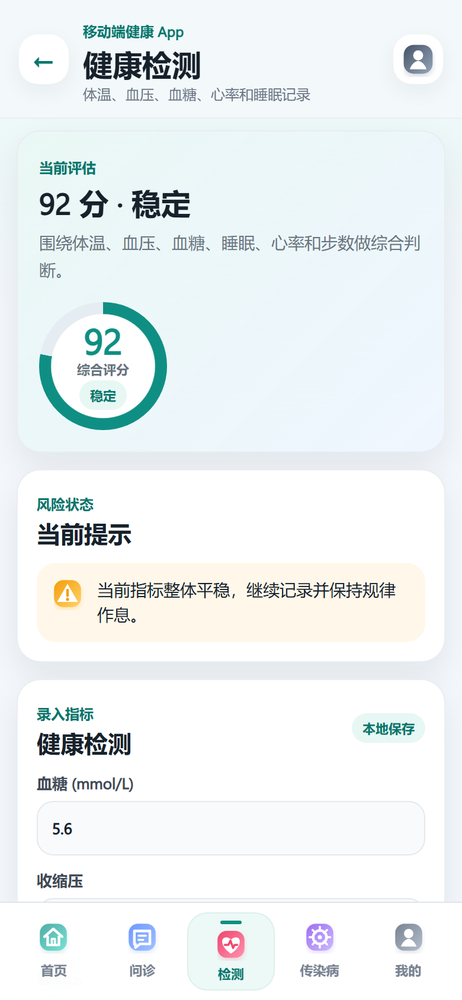
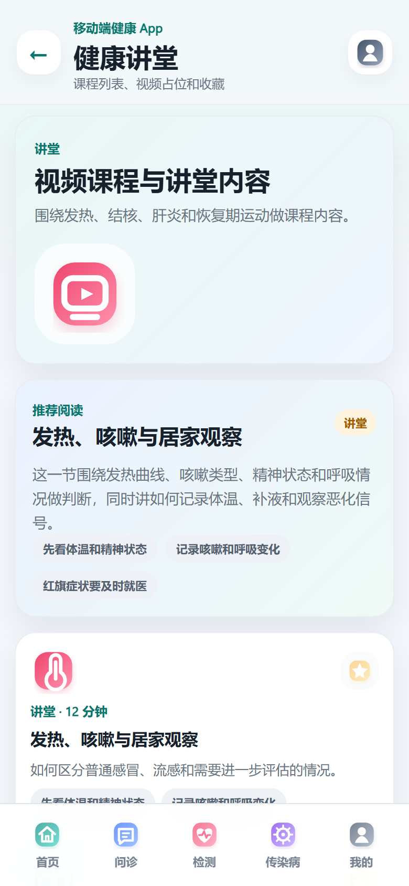
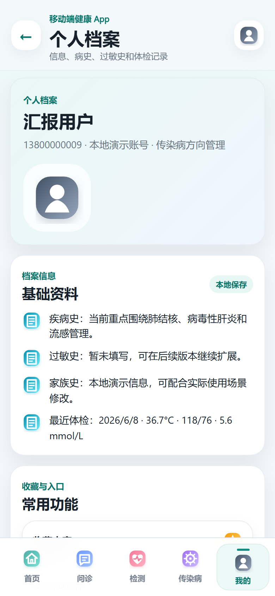
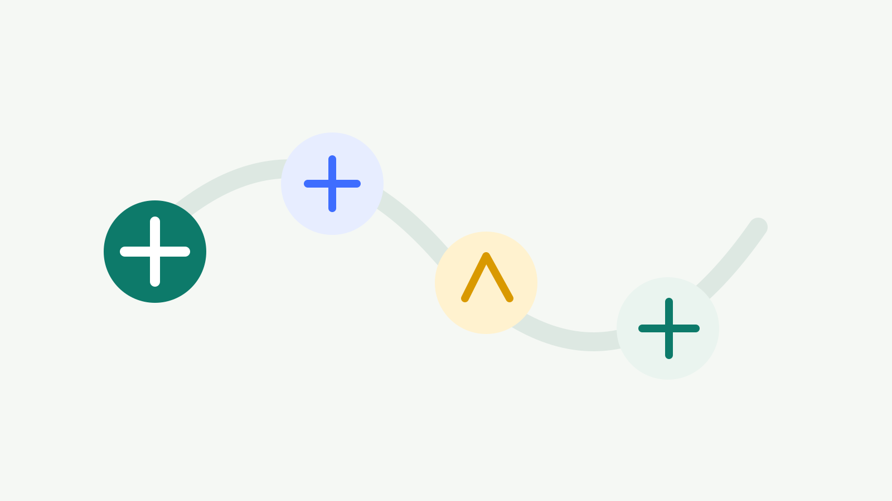
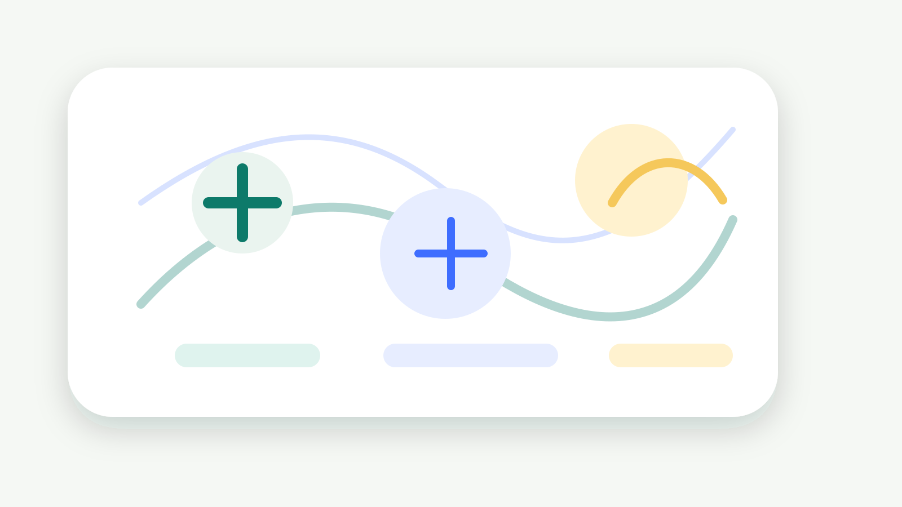
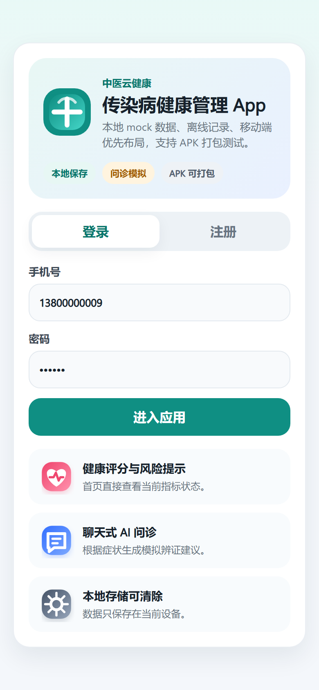

TCM CLOUD HEALTH
围绕传染病方向，把风险提示、问诊建议、检测记录、疾病档案和康复管理串成一条日常使用路径。
NARRATIVE
先判断今天有没有风险，再决定要做什么，最后把记录沉淀到档案里。
首页把评分、肺结核等重点风险、待办和指标摘要放在第一屏。
问诊、检测和疾病档案把模糊症状转成可执行动作。
膳食、运动、讲堂和个人档案承接恢复期的日常管理。
HOME
第一屏不是入口堆叠，而是把健康评分、重点疾病、待办和服务入口排出优先级。
AI CONSULT
用户输入咳嗽、低热、出汗等症状后，页面给出方向判断、辨证思路和就医提醒。
症状 + 时长 + 接触史
疾病风险
管理建议
HEALTH DATA
体温、血压、血糖、心率、睡眠和步数不只是录入项，而是后续问诊和随访的依据。

DISEASE MANAGEMENT
艾滋病、肺结核、病毒性肝炎、流感、手足口病都有独立管理信息，方便切换重点和持续跟踪。
RECOVERY LOOP
问诊和检测之后，用户需要的是可执行的生活安排。
清淡高蛋白、补水、避免烟酒辛辣。
九种体质问卷解释调理方向。
发热期暂停，恢复期轻量活动。
讲堂和百科承接科普、收藏、复查。



ENGINEERING
本地 mock 和 localStorage 支撑完整流程，Capacitor 负责同步到 Android 项目并生成 APK。

COMPLETION
这版不是静态原型，关键交互都能在本地数据里产生状态变化，适合放到手机上走完整演示。

ROADMAP
当前版本已经满足手机测试和课程汇报；继续扩展时，重点是数据同步、医护协作和真实模型能力。